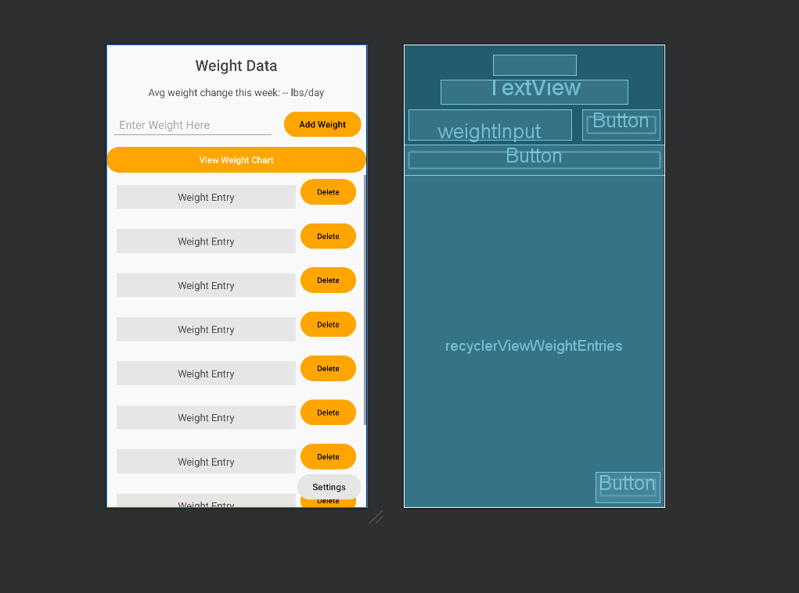

Overview
This enhancement improves the data processing and algorithmic functionality within the GravityGauge project. The key improvement was implementing a moving average algorithm to track weight trends over time. Additionally, the user interface was updated to present this data in a more structured format.
Implemented Moving Average Algorithm
Below is the updated algorithm implementation:

This function calculates the weekly weight trend, allowing users to see if they are gaining or losing weight over time. A testing mode was also added to allow calculations to be based on either the last seven real-world days or the last seven weight entries for easier debugging.
Testing Mode Implementation
A new testing mode was added, allowing developers to simulate a seven-day trend using the last seven entries instead of real-world time.

Changes Implemented
Before this enhancement, the application lacked a way to analyze long-term weight trends. The following changes were made:
- Added a moving average algorithm to DatabaseManager.java.
- Updated activity_weight_data.xml to display the computed weight trend.
- Modified getAllWeightEntries() to sort entries with the newest first.
- Enabled a vertical scrollbar in RecyclerView for better navigation.
- Verified SQLite database functionality using Android Studio's Database Inspector.
Code Example: Before vs. After
Before Enhancement (No Moving Average Calculation)
public List getAllWeightEntries() {
List entries = new ArrayList<>();
SQLiteDatabase db = this.getReadableDatabase();
Cursor cursor = db.rawQuery("SELECT * FROM weight_entries", null);
if (cursor.moveToFirst()) {
do {
entries.add(new WeightEntry(cursor.getInt(0), cursor.getInt(1)));
} while (cursor.moveToNext());
}
cursor.close();
db.close();
return entries;
}
After Enhancement (Moving Average Implemented)
private List weightCache = null;
public List getWeightEntries() {
if (weightCache != null) {
return weightCache;
}
weightCache = new ArrayList<>();
try (SQLiteDatabase db = this.getReadableDatabase();
Cursor cursor = db.rawQuery("SELECT * FROM weight_entries", null)) {
while (cursor.moveToNext()) {
weightCache.add(new WeightEntry(cursor.getInt(0), cursor.getInt(1)));
}
}
return weightCache;
}
public double getMovingAverage(boolean testMode) {
List weights = new ArrayList<>();
SQLiteDatabase db = this.getReadableDatabase();
String query = testMode
? "SELECT weight FROM weight_entries ORDER BY id DESC LIMIT 7"
: "SELECT weight FROM weight_entries WHERE date >= date('now', '-7 days')";
Cursor cursor = db.rawQuery(query, null);
while (cursor.moveToNext()) {
weights.add(cursor.getDouble(0));
}
cursor.close();
if (weights.isEmpty()) return 0.0;
double sum = 0.0;
for (double weight : weights) sum += weight;
return sum / weights.size();
}
Enhancing UI: Displaying Weekly Trends
A new TextView was added to activity_weight_data.xml to display the weekly average weight change. The moving average function updates dynamically when a new weight entry is added.
Updated UI Code in WeightDataActivity.java
private void updateWeightTrend() {
double avgChange = dbManager.getMovingAverage(false);
avgWeightChangeTextView.setText("Weekly Average Change: " + avgChange + " lbs");
}
Impact of the Enhancement
These improvements resulted in:
- More meaningful weight tracking by analyzing long-term trends.
- Better user experience with clear trend visualization.
- Improved database efficiency by using optimized queries.
Conclusion
By adding a moving average algorithm, testing mode, and improving UI responsiveness, the GravityGauge app is now more effective at tracking user weight trends. These enhancements improved both algorithmic efficiency and user experience.